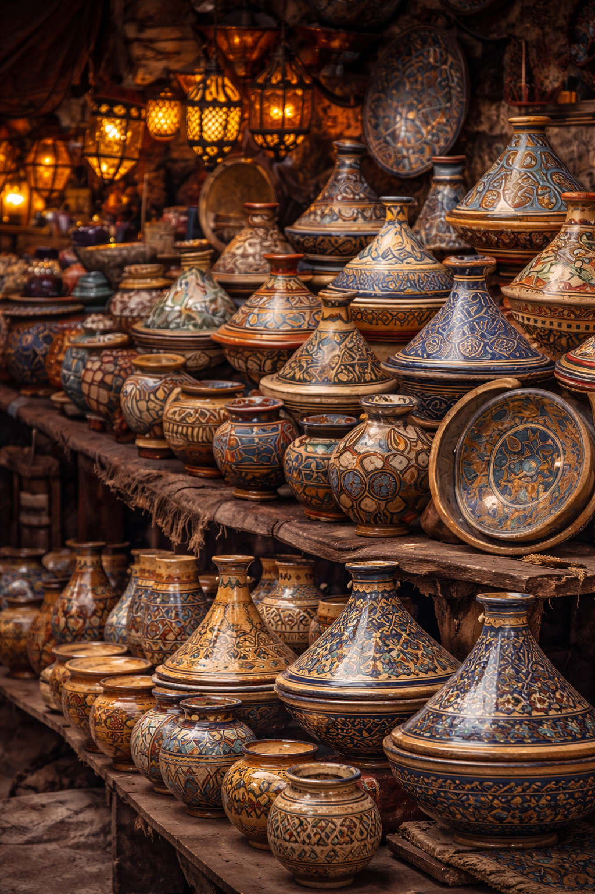
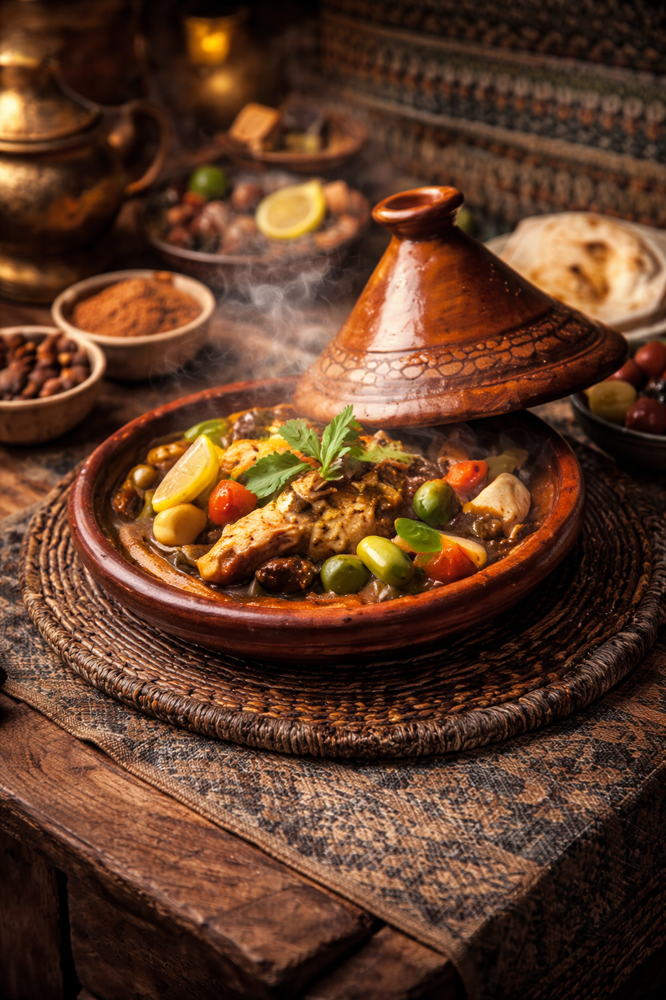
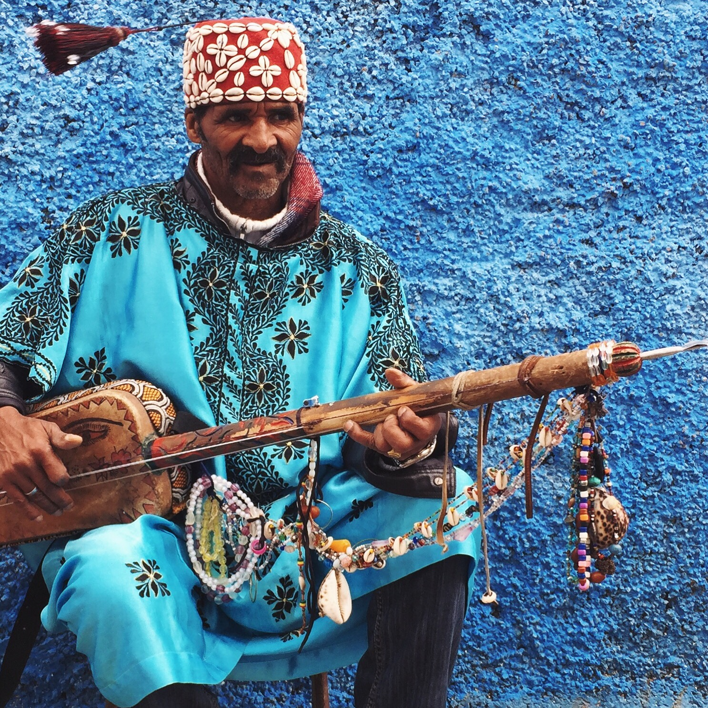

Le Maroc
Artisanat Marocain
Un travail minutieux transmis de génération en génération, où chaque objet raconte une tradition et un savoir-faire unique.
Gastronomie
La cuisine marocaine mêle épices, couleurs et saveurs pour créer des plats généreux et reconnus dans le monde entier.
Musique & Danse
Les rythmes marocains, entre chants spirituels et fêtes populaires, reflètent une culture riche et vibrante.
L’Artisanat : une identité qui traverse le temps
L’artisanat occupe une place essentielle dans le patrimoine marocain. Que ce soit à travers la poterie, le travail du bois, le tissage ou la bijouterie, chaque création porte l’empreinte d’histoires anciennes. Dans les médinas, les artisans perpétuent ces techniques avec passion, transformant des matériaux simples en œuvres uniques.
Une cuisine chaleureuse et conviviale
La gastronomie marocaine fait partie des plus appréciées au monde. Des plats traditionnels comme le tajine, le couscous ou encore la pastilla reflètent le mélange des influences berbères, arabes et andalouses. Partager un repas au Maroc, c’est s’offrir un moment de convivialité et de générosité.
Des sonorités qui rassemblent
La musique marocaine est un véritable voyage entre émotions et célébrations. Du gnawa spirituel aux percussions rythmées du chaâbi, chaque région propose un style unique. Les danses traditionnelles accompagnent souvent ces mélodies, donnant vie à des moments de fête et de partage.